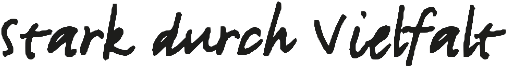

KAPi – Kappelrodeck International · Bürgertreff KaM·in
Komm herein.
KaM·in – gesprochen wie „Come in“. Der Bürgertreff am Kappler Marktplatz. Für alle, die hier leben. Egal, seit wann.

Ein Ort von KAPi – Kappelrodeck International- Alles kostenlos.
- Ohne Anmeldung.
- Alle willkommen.
- Mo–Sa am Nachmittag.
Der Bürgertreff am Kappler Marktplatz
Ein langer Tisch, viele Stühle, immer Tee.
KaM·in – gesprochen wie das englische „Come in“. Schön, dass du da bist.
KaM·in ist ein Raum am Marktplatz mit einem langen Tisch, vielen Stühlen und immer einer Kanne Tee. Hier lernst du Leute aus Kappelrodeck kennen – und Leute aus der ganzen Welt. Du kommst, wann du magst, bleibst, so lange du willst, und niemand fragt nach einem Formular.
- Wann?
- Montag bis Samstag, am Nachmittag.
- Wo?
- Marktplatz 108, Kappelrodeck.
- Bin ich willkommen?
- Ja. Genau so, wie du bist.
Ein Tee, ein Gespräch, ein Spiel. Mehr braucht es nicht, um anzukommen. Wir freuen uns auf dich.
Zum WochenprogrammProgramm
Diese Woche im KaM·in.
Jede Woche das Gleiche, und das ist gut so: Du weißt, wann jemand da ist. Alles kostenlos, ohne Anmeldung. Kommst du einmal, kennst du beim zweiten Mal schon Namen.
Bürgertreff KaM·in · Marktplatz 108, 77876 Kappelrodeck
Geöffnet Montag bis Samstag am Nachmittag · alles kostenlos, ohne Anmeldung
Wir sprechen Deutsch
Deutsch üben am Tisch, nicht an der Tafel. Alle Niveaus.
Hausaufgabenhilfe / ABC
Für Kinder mit Hausaufgaben – und für Erwachsene, die Lesen und Schreiben lernen.
Feierabendtreff
1× im MonatEin Abend für alle, die schon lange hier leben, und für alle, die gerade angekommen sind.
Nadelspielereien
Nähen, Stricken, Häkeln – Wolle und Stoff sind da.
Spieletreff
Karten und Brettspiele für alle Altersstufen.
Offene Musikwerkstatt
Instrumente stehen bereit, Noten sind nicht nötig.
Afrikanisches Trommeln
Für Kinder und Erwachsene, kein Vorwissen nötig.
Dazu kommen das Sommerfest, Workshops und alles, was Leute aus dem Ort vorschlagen. Das Monatsprogramm gibt es als PDF – zum Ausdrucken, Aufhängen und Weitergeben.
Was bleibt
Was bei uns bleibt.
Manche Nachmittage vergisst man nicht: das Sommerfest, an dem der Marktplatz voll war. Das Trommeln, das man bis zur Kirche hörte. Hier sammeln wir, was uns ausmacht.
Fest
Sommerfest am Marktplatz
Einmal im Jahr deckt der Marktplatz den Tisch: Essen aus vielen Ländern, Musik aus der Musikwerkstatt, Trommeln und eine Spielecke für Kinder. Bring gern ein Gericht aus deiner Heimat mit.
Rhythmus
Afrikanisches Trommeln
Ein Nachmittag, an dem der Marktplatz schneller schlägt. Für Kinder und Erwachsene, kein Vorwissen nötig.
Netzwerk
KAPi – wer steht dahinter
Nachbarn, Vereine, Sprachpaten und die Gemeinde. Menschen, die ihre Zeit schenken, damit niemand fremd bleiben muss.
Was bei uns läuft
Sieben Gründe vorbeizukommen.
Alles kostenlos, ohne Anmeldung. Du brauchst nichts mitzubringen – nur dich. Und gern jemanden, der auch noch nie da war.
- Wir sprechen Deutsch Mo · 15:00–16:30 · kostenlos Deutsch üben am Tisch, nicht an der Tafel. Du sagst so viel, wie du willst – und jemand hört zu.
- Hausaufgabenhilfe / ABC Mo · 16:30–18:00 · kostenlos Für Kinder mit Hausaufgaben und für Erwachsene, die Lesen und Schreiben neu lernen. Geduld ist da, Stifte auch.
- Feierabendtreff Mi · 18:00–22:00 · kostenlos1× im Monat Ein Abend für alle, die schon lange hier leben, und für alle, die gerade angekommen sind. Reden, lachen, sitzen bleiben.
- Nadelspielereien Do · 15:00–17:00 · kostenlos Nähen, Stricken, Häkeln – Wolle und Stoff sind da. Und Leute, die es dir zeigen, wenn du magst.
- Spieletreff Fr · 15:00–17:00 · kostenlos Karten und Brettspiele für alle Altersstufen. Spielen versteht man in jeder Sprache.
- Offene Musikwerkstatt Sa · nach Vereinbarung · kostenlos Instrumente stehen bereit, Noten sind nicht nötig. Wer einen Rhythmus hat, ist Musiker.
- Afrikanisches Trommeln nach Ankündigung · kostenlos Ein Nachmittag, an dem der Marktplatz schneller schlägt. Für Kinder und Erwachsene, kein Vorwissen nötig.
Aktuelles
Neues vom Marktplatz.
Rückblicke, Termine und Gesuche. Wenn du nichts verpassen willst: Das Monatsprogramm kommt auch per E-Mail zu dir.
-
Sommerfest am Marktplatz
Einmal im Jahr deckt der Marktplatz den Tisch: Essen aus vielen Ländern, Musik, Trommeln und eine Spielecke. Bring gern ein Gericht aus deiner Heimat mit – ein kleines Schild dazu, dann wissen alle, was drin ist.
-
Neue Sprachpaten gesucht
Du sprichst Deutsch und hast eine Stunde Zeit? Mehr braucht es nicht. Keine Ausbildung, kein Lehrplan – nur Geduld und ein Gespräch am Tisch.
-
Rückblick: Trommel-Workshop
Man hat es bis zur Kirche gehört. Über 30 Kinder und Erwachsene haben getrommelt, und am Ende hatten alle denselben Rhythmus. Danke an alle, die da waren.
Unsere Haltung
„Man lernt sich nicht auf Formularen kennen. Man lernt sich kennen, wenn man zusammen am Tisch sitzt.“
Über uns
KAPi – Kappelrodeck International.
KAPi ist ein Projekt der Gemeinde Kappelrodeck. Unser Ort hat rund 6.000 Einwohner:innen, und sie kommen aus über 50 Ländern. Wir finden: Das ist kein Problem, das man lösen muss, sondern ein Reichtum, den man teilen kann.
Deshalb bringen wir Menschen zusammen – Einheimische und Zugezogene, Alte und Junge, Vereine und Nachbarn. Getragen wird KAPi von Menschen, die ihre Zeit schenken: Sprachpaten, Helfern beim Spieletreff, Bäckerinnen fürs Sommerfest. Der Bürgertreff KaM·in am Marktplatz ist der Ort, an dem das jeden Nachmittag passiert. Was dort läuft, entscheiden die Leute, die hinkommen.
-
50+
Länder – so viele Herkünfte leben in einem Ort, der auf eine Postkarte passt
-
560+
Nachbarinnen und Nachbarn mit Migrationsgeschichte
-
6
Tage die Woche ist die Tür offen
-
0 €
Alles kostenlos. Immer.
Unsere Werte
-
01
Vielfalt
Über 50 Länder in einem Ort. Am Tisch im KaM·in sitzen sie nebeneinander.
-
02
Begegnung
Man lernt sich nicht auf Formularen kennen, sondern beim Kartenspiel, beim Stricken, beim Deutschüben.
-
03
Toleranz & Respekt
Jede und jeder kommt so, wie sie oder er ist. Niemand muss etwas beweisen.
Getragen von
Menschen, die ihre Zeit schenken: Sprachpaten, Helfer beim Spieletreff, Bäckerinnen fürs Sommerfest – und die Gemeinde Kappelrodeck.
- Ansprechperson Bürgertreff Name folgt
- Koordination Sprachpaten Name folgt
- Gemeinde Kappelrodeck Name folgt
Partner & Förderer
KAPi ist ein Projekt der Gemeinde Kappelrodeck. Die Baden-Württemberg Stiftung hilft mit – im Programm „Vielfalt gefällt! Orte der Toleranz“.
- Gemeinde Kappelrodeck
- Baden-Württemberg Stiftung
Mitmachen
Mach mit.
Du willst mitmachen? Schreib uns oder komm vorbei. Wir zeigen dir alles.
-
01
Vorbeikommen
Komm an einem Nachmittag, trink einen Tee und schau, was zu dir passt. Ohne Anmeldung, ohne Verpflichtung, ohne Erwartungen.
-
02
Mithelfen
Werde Sprachpate, hilf beim Spieletreff oder bring Kuchen zum Feierabendtreff. Schon eine Stunde pro Woche macht einen Unterschied – du brauchst keine Ausbildung, nur Geduld und Freude an Menschen.
-
03
Idee mitbringen
Du kannst kochen, schnitzen, tanzen, rechnen? Das Programm entsteht aus den Ideen der Leute, die hier sind. Erzähl uns davon, wir finden einen Nachmittag dafür.
Kontakt & Anfahrt
Komm vorbei, schreib oder ruf an.
Am einfachsten ist es, du kommst an einem Nachmittag am Marktplatz 108 vorbei. Wenn du lieber erst schreiben willst: Wir antworten in Deutsch, Englisch oder Ukrainisch – und wir antworten bald.
- Adresse
- Bürgertreff KaM·in
Marktplatz 108
77876 Kappelrodeck - Geöffnet
- Montag bis Samstag am Nachmittag. Wann genau, steht im Programm.
- Ansprechpartnerin
- Angabe folgt
- Telefon
- Angabe folgt
- info@kam-in.de
- Angabe folgt
Die Tür am Marktplatz ist offen.
Marktplatz 108
77876 Kappelrodeck
Ortenau, Baden-Württemberg
Route öffnenÖffnet OpenStreetMap in einem neuen Tab.
Monatsprogramm
Das Programm kommt zu dir.
Einmal im Monat schicken wir dir per E-Mail, was im KaM·in los ist. Kostenlos, jederzeit abbestellbar.
Öffnet dein E-Mail-Programm. Abmelden geht jederzeit.